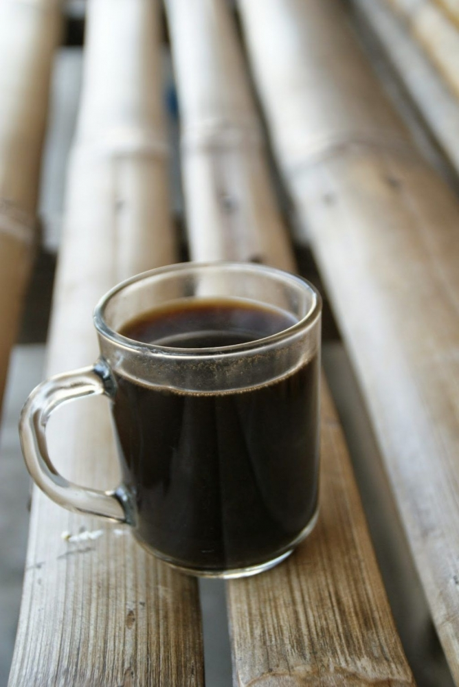

Toraja-style Coffee

Description
This is how to make coffee in the Toraja style.
Ideally you should use Toraja coffee, but any kind will do.
Ingredients
- finely ground coffee
- sugar
- a small coffee glass, like the one pictured
Steps
- Heat water not quite to boiling
- While the water is heating, place 1 tsp cofee and 1 tsp sugar in your glass
- Once hot, pour water into glass and stir thoroughly with a spoon
- Let the grounds settle for a minute or so (optional: cover the glass so it stays hot)
- Sip the coffee without getting much of the grounds in your mouth